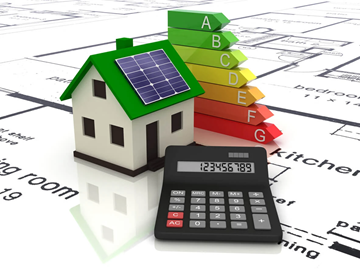

Economia e Viabilidade Financeira de Sistemas Fotovoltaicos
Custo Inicial
Historicamente, o custo inicial de instalação de um sistema fotovoltaico era uma barreira significativa. No entanto, com o avanço tecnológico e a escala de produção, os preços dos painéis e equipamentos têm diminuído consideravelmente. Além disso, muitos governos e instituições financeiras oferecem subsídios, linhas de crédito especiais e incentivos fiscais (como isenção de impostos ou deduções) que ajudam a mitigar esse investimento inicial, tornando a energia solar mais acessível para residências e empresas.
Retorno sobre Investimento (ROI)
O tempo de retorno do investimento (payback) para um sistema fotovoltaico tem se tornado cada vez mais atrativo. Geralmente, varia de 4 a 8 anos, mas pode ser influenciado por diversos fatores, como o tamanho do sistema instalado, a eficiência dos painéis, a irradiação solar da localização geográfica, o custo da eletricidade fornecida pela concessionária local e a existência de políticas de incentivo. Em regiões com tarifas de energia elevadas e alta irradiação solar, o payback pode ser ainda mais rápido.
Economia de Longo Prazo
Após o período de payback, o sistema fotovoltaico começa a gerar uma economia líquida significativa na conta de energia elétrica. A vida útil esperada dos painéis solares é de 25 a 30 anos, com muitos sistemas operando eficientemente por mais tempo. Isso significa que, por décadas, o proprietário do sistema pode desfrutar de eletricidade gratuita ou a um custo muito reduzido, protegendo-se contra futuros aumentos nas tarifas de energia e valorizando o imóvel. A energia solar se consolida, assim, como um investimento de longo prazo com retornos consistentes